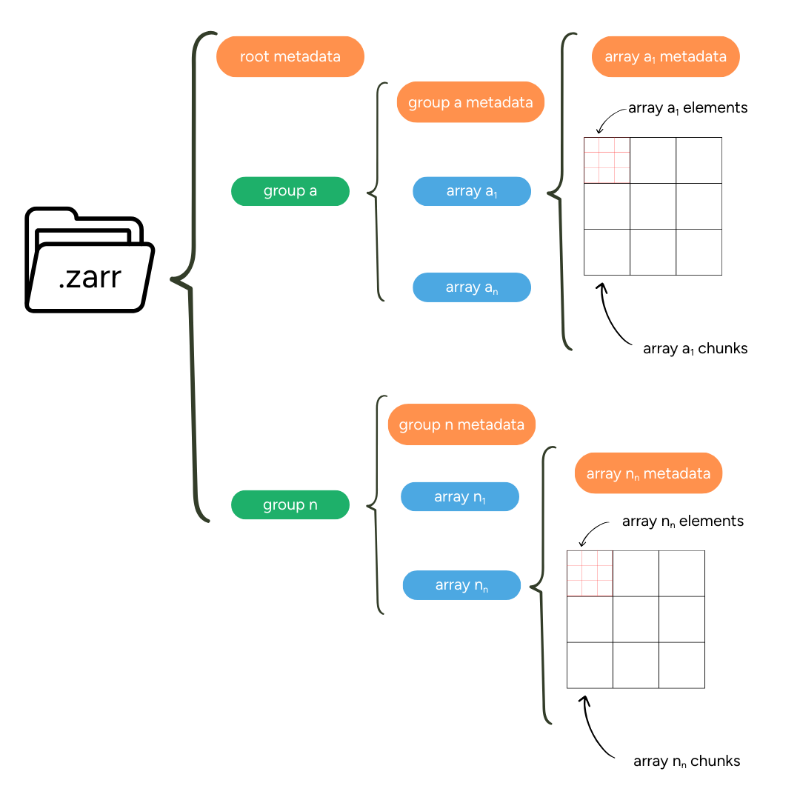
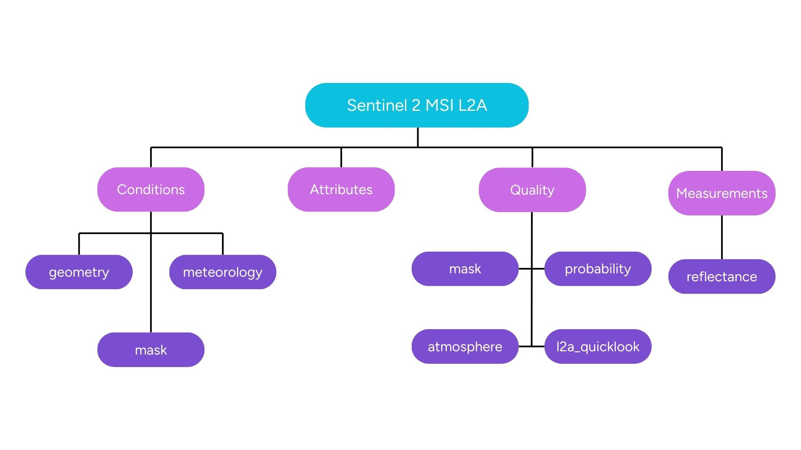

Overview of the EOPF Zarr format
Introduction
In our journey to understand cloud-optimised Earth Observation (EO) data, we have frequently mentioned the Zarr format. Now, we will take a closer look and truly understand what Zarr is and why it is such a game-changer for large datasets like those from ESA’s Sentinel missions. This chapter will break down the essential building blocks of Zarr, explaining how it organises data to make it incredibly efficient for cloud-based analysis.
What we will learn
- üîó What is Zarr?
- üèõÔ∏è What are the main components of Zarr?
- üß± How is Zarr organised?
What Is Zarr?
Zarr is an open-source, cloud-native protocol for storing multi-dimensional arrays. It is specifically designed to work well with cloud storage and larger-scale computing systems and can be seen as a cloud-native alternative to older formats like HDF5 or NetCDF.
Key advantage to traditional formats is that the Zarr specification stores large multi-dimensional arrays in chunks, which are smaller pieces of the larger array. Chunks can be accessed individually, or multiple chunks can be read and written in parallel, making data access highly efficient.
Zarr works across different storage systems, including local file systems, cloud object storage, as well as distributed file systems, offering a greater flexibility compared to traditional file formats.
In addition, Zarr embeds metadata directly alongside the data. This makes Zarr self-descriptive, as each data array contains descriptive information about itself, such as data type, dimensions or additional attributes.
Pro tip: Learn more about Zarr in the official Zarr Documentation and the Zarr V3 storage specification
Components of Zarr
Zarr is organised in a human-readable, hierarchical structure using simple JSON metadata files and is composed of groups and stores, chunks and metadata:
Groups and Stores
Groups and stores are concepts that allow Zarr to differentiate between (i) where the data is stored (stores) and (ii) how it is organised (groups). A group is a container for logically organising the data, similar to folders in a file system. A store defines where the data is stored; it can be, e.g. a bucket in the cloud or a directory on a disk.
Chunks
Zarr divides arrays into smaller, independent pieces (chunks). Through chunking, it is possible to retrieve and process specific areas without loading the complete dataset. Its organisation into chunks is the main reason for Zarr’s high performance. Chunks are saved as binary files inside a /c directory and are further organised through nested folder paths based on their index, e.g. c/0/0/0 for the chunk position [0,0.0].
Metadata
Zarr uses descriptive metadata to describe the individual arrays but also the full hierarchy of the dataset. Metadata is stored in zarr.json files and is available on the array, group and store levels. This structured metadata approach makes Zarr datasets self-descriptive and easy to navigate.
The graphic below shows an overview of all relevant Zarr components.

EOPF Zarr Structure
The ESA EOPF defines Zarr as the encoding format for the EOPF Sentinel Zarr Samples Service. The Zarr encoding is well aligned with ESA’s objective of enhancing the accessibility of Sentinel data by modernising the previous .SAFE encoding into a flexible, cloud-native structure. The cloud-native nature of zarr is expected to broaden the applications of the Sentinel data within the geospatial community while maintaining data quality and established algorithms.
EOPF Zarr products consist of four main groups:
| Group | Description |
|---|---|
| Attributes | STAC format metadata for the Zarr element |
| Measurements | Main retrieved variables |
| Conditions | Measurement context (geometric angles, meteorological/instrumental data) |
| Quality | Flags and quality information for measurement filtering |
EOPF Zarr product example: Sentinel-2 L2A
Let us imagine a Sentinel-2 L2A tile. The tile has dimensions of approximately 10,980 by 10,980 pixels, and includes 12 spectral bands (B01 to B12, excluding B10) at different resolutions, plus additional data arrays such as a Scene Classification Map (SCL) and Atmospheric Optical Thickness (AOT).
For efficient handling, the data is divided into 1,024 by 1,024-pixel chunks. This chunking strategy allows for optimal performance when reading specific spatial regions of interest.
The figure below gives a graphical overview of how an EOPF Zarr Sentinel-2 L2A product file is organised. 
The table below provides a more detailed outline of what content is available in the different groups.
| Group | Content | |
|---|---|---|
| Attributes | Processing history metadata Chunking configuration Global metadata (acquisition time, sensing time, etc.) Product-specific metadata≈ |
|
| Measurements | 10m resolution (r10) | B02 (Blue, 490nm) B03 (Green, 560nm) B04 (Red, 665nm) B08 (NIR, 842nm) |
| 20m resolution (r20) | B05 (Red Edge 1, 705nm) B06 (Red Edge 2, 740nm) B07 (Red Edge 3, 783nm) B8A (Narrow NIR, 865nm) B11 (SWIR 1, 1610nm) B12 (SWIR 2, 2190nm) |
|
| 60m resolution (r60) | B01 (Coastal aerosol, 443nm) <br?B09 (Water vapour, 945nm) | |
| Conditions | Sun angles (zenith, azimuth) Viewing angles Mean solar irradiance Atmospheric parameters such as (i) Aerosol Optical Thickness (AOT), (ii) Water Vapour (WV) and (iii) Cloud and snow probability |
|
| Quality | Scene Classification Layer (SCL) Quality flags for each band Detector footprint Defective pixels masks |
Zarr Deep Dive: Dive deeper into the benefits of Zarr in a blog post by Lindsey Nield from the Earthmover team: Fundamentals: What is Zarr? A Cloud-Native Format for Tensor Data.
Conclusion
The EOPF Zarr structure allows for efficient access to individual bands or specific spatial regions without loading the entire dataset, making it ideal for large-scale geospatial analysis. It further ensures all relevant metadata is co-located with the data, enhancing data discoverability and usability.
What’s next?
Now that you have a theoretical grasp of the Zarr format, the next section Discover EOPF Zarr - Sentinel-2 L2A will provide a first hands-on experience opening an EOPF Zarr product. We will transition to our first Jupyter Notebook where you will directly interact with a Zarr store.